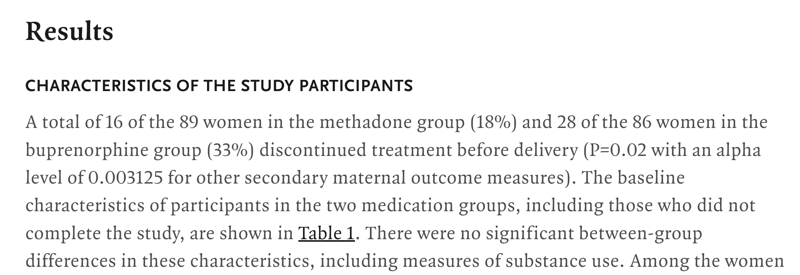
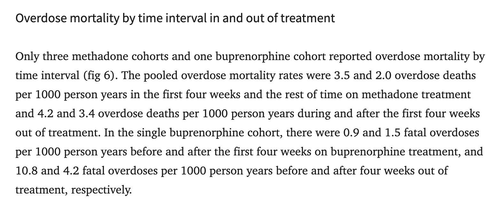

Probability review
00
Differentiate between rates and probabilities conceptually
Interpret rates and probabilities in applied examples
Identify and correctly interpret rates and probabilities in the literature
01
Probability review
02
Rates review
03
Rates versus probabilities
04
Summary
05
Identifying rates and probabilities in the literature
06
Translating between rates and probabilities
01
Probability is the likelihood that an event occurs within a specified time period.
Out of everyone we followed for this period, what fraction experienced the event?
Proportion / percentage: 0.40 or 40%
Frequency: 40 per 100 (or 4 per 1,000)
Odds: P/(1-P) (ranges from 0 to \infty)
Epidemiologic terminology: - Cumulative incidence (risk): the probability of experiencing the event by time t - Examples: “1-year risk,” “5-year cumulative incidence”
02
Incidence (hazard) rate: number of events per unit of person-time
Rates describe how fast events occur
Rates can range from 0 to \infinity
03
Probability (risk): chance an individual experiences an event by a specified time
Rate: speed at which events occur per unit of person-time
Key distinction: rates use person-time in the denominator; probabilities do not
Study: 100 people followed for up to 4 years; 40 deaths.
Probability (risk) over 4 years: 40/100 = 0.40 ;
Interpretation: 40% died within 4 years.
Rate (if all 100 followed for 4 years): Total person-time = 100 \times 4 = 400 person-years; 40/400 = 0.10 deaths per person-year
Interpretation: 0.10 deaths occur for every 1 person-year of follow-up; or around 1 death per 10 person-years of follow-up across the study population
Study: 100 people, planned follow-up = 4 years
Case: 40 deaths occur in Year 1
04
| Measure | Formula | Range | Used in |
|---|---|---|---|
| Rate | \dfrac{\# \text{events}}{\text{total person-time}} | 0–\infty | Rate matrices |
| Probability / risk | \dfrac{\# \text{events}}{\# \text{people followed}} | 0–1 | Probability matrices |
05


06
Rate to Probability p = 1 - e^{-rt}
Probability to Rate
r = \frac{-ln(1-p)} {t}
Example: Consider we have a 12-month probability of 10.8% that a child under age 6 is newly diagnosed with elevated blood lead levels. If your Markov model has a 3-month cycle length, a 3-month probability is needed.
STEP 1 Convert the 12-month probability to a 12-month rate (or 12-month probability to a 3-month rate)
Note
Cannot divide/multiply probabilities
r = \frac{-ln(1-p)} {t}
r = \frac{-ln(1-.108)} {1} = 0.1142891
Note
Since the time period doesn’t change, the denominator is 1
STEP 2 Convert the 12-month rate to a 3-month rate
\frac{0.1142891}{4} = 0.02857228
STEP 2 Convert 3-month rate to 3-month probability
p = 1 - e^{-r\Delta t}
p = 1 - e^{−0.02857228∗1} = 0.028168
OR, Step 1 Convert the 12-month probability to a 3-month rate
r = \frac{-ln(1-p)} {t}
r = \frac{-ln(1-.108)} {4} = 0.02857229
STEP 2 Convert 3-month rate to a 3-month probability
p = 1 - e^{-r\Delta t}
p = 1 - e^{−0.02857229∗1} = 0.028168
Note
***IF we took the probability of .108 / 4 to get the 3M probability, we would get 0.027. This is CLOSE but it could make a huge difference when modeling hundredths of thousands of individuals, for example
A set of formulas often used to account for competing risks are as follows:
p_{HS}= \frac{r_{HS}}{r_{HS}+r_{HD}}\big ( 1 - e^{-(r_{HS}+r_{HD})\Delta t}\big )
p_{HD}= \frac{r_{HD}}{r_{HS}+r_{HD}}\big ( 1 - e^{-(r_{HS}+r_{HD})\Delta t}\big )
p_{HH} = e^{-(r_{HS}+r_{HD})\Delta t}
| Equation | Use case | Advantage |
|---|---|---|
| p = 1 - e^{-rt} | When you know a rate but need a probability for a fixed cycle length | Simple closed-form conversion under a constant (exponential) hazard |
| r = -\ln(1-p)/t | When you have a probability but need a rate to rescale across time intervals | Preserves the correct exponential relationship when changing cycle length |
| Competing-risk formulas p_{HS}, p_{HD} | When more than one event can occur from the same state (e.g., Healthy → Sick and Healthy → Dead) | Properly accounts for competing hazards and prevents hidden within-cycle events |
There’s an even more accurate way to correct for “competing risks” & while it’s beyond the scope of this introductory workshop, we will briefly review how to do this within the Markov lecture.
Key Takeaways
Rates & Probabilities